<!DOCTYPE lake>
<h2 data-lake-id="ZZJxj" id="ZZJxj"><span data-lake-id="u5329dc4b" id="u5329dc4b">官方使用说明</span></h2><p data-lake-id="u6d159847" id="u6d159847"><span data-lake-id="u1e7090ae" id="u1e7090ae">参考链接：</span><a data-lake-id="uf3466e0c" href="https://doc.zh-jieli.com/Tools/zh-cn/dev_tools/codeblocks/index.html" id="uf3466e0c" rel="noopener noreferrer" target="_blank"><span data-lake-id="ua484680a" id="ua484680a">https://doc.zh-jieli.com/Tools/zh-cn/dev_tools/codeblocks/index.html</span></a></p><p data-lake-id="ua034c5bb" id="ua034c5bb"><span class="lake-fontsize-12" data-lake-id="u20e59b28" id="u20e59b28" style="color: rgb(34, 34, 34); background-color: rgb(252, 252, 252)">这里列举了 Code::Blocks 的使用说明。包括如何实现某些功能，以及一些常见报错的处理方式。</span></p><ul list="uf8be050f"><li data-lake-id="ue3c264c0" fid="u6a83a43d" id="ue3c264c0"><a data-lake-id="u85ddcaf4" href="https://doc.zh-jieli.com/Tools/zh-cn/dev_tools/codeblocks/howtos.html" id="u85ddcaf4" rel="noopener noreferrer" target="_blank"><span data-lake-id="udcd0857a" id="udcd0857a">3.1. 应该如何实现某功能</span></a></li></ul><ul data-lake-indent="1" list="uf8be050f"><li data-lake-id="u30178c82" fid="ub0d9fe27" id="u30178c82"><a data-lake-id="u5e7d6299" href="https://doc.zh-jieli.com/Tools/zh-cn/dev_tools/codeblocks/howto_add_files.html" id="u5e7d6299" rel="noopener noreferrer" target="_blank"><span data-lake-id="ua8ca6fec" id="ua8ca6fec">3.1.1. 添加新的文件到工程中编译</span></a></li><li data-lake-id="u8ccea603" fid="ub0d9fe27" id="u8ccea603"><a data-lake-id="u98a53e94" href="https://doc.zh-jieli.com/Tools/zh-cn/dev_tools/codeblocks/howto_view_toolset.html" id="u98a53e94" rel="noopener noreferrer" target="_blank"><span data-lake-id="u305babcf" id="u305babcf">3.1.2. 如何查看当前工程是什么工具</span></a></li><li data-lake-id="u519cc3c4" fid="ub0d9fe27" id="u519cc3c4"><a data-lake-id="u3bd447de" href="https://doc.zh-jieli.com/Tools/zh-cn/dev_tools/codeblocks/howto_add_cflags.html" id="u3bd447de" rel="noopener noreferrer" target="_blank"><span data-lake-id="u4572257e" id="u4572257e">3.1.3. 如何添加编译参数</span></a></li><li data-lake-id="ud8f71734" fid="ub0d9fe27" id="ud8f71734"><a data-lake-id="uf7472b01" href="https://doc.zh-jieli.com/Tools/zh-cn/dev_tools/codeblocks/howto_add_define.html" id="uf7472b01" rel="noopener noreferrer" target="_blank"><span data-lake-id="uc48184eb" id="uc48184eb">3.1.4. 如何添加宏定义</span></a></li><li data-lake-id="u24f98262" fid="ub0d9fe27" id="u24f98262"><a data-lake-id="u8a3bd770" href="https://doc.zh-jieli.com/Tools/zh-cn/dev_tools/codeblocks/howto_add_include.html" id="u8a3bd770" rel="noopener noreferrer" target="_blank"><span data-lake-id="u28c135e2" id="u28c135e2">3.1.5. 如何添加搜索路径（-I..）</span></a></li><li data-lake-id="u7b96c812" fid="ub0d9fe27" id="u7b96c812"><a data-lake-id="u83a14937" href="https://doc.zh-jieli.com/Tools/zh-cn/dev_tools/codeblocks/howto_set_ldflags.html" id="u83a14937" rel="noopener noreferrer" target="_blank"><span data-lake-id="u1b74df07" id="u1b74df07">3.1.6. 如何设置链接参数</span></a></li><li data-lake-id="uab3d920b" fid="ub0d9fe27" id="uab3d920b"><a data-lake-id="ua7d0533d" href="https://doc.zh-jieli.com/Tools/zh-cn/dev_tools/codeblocks/howto_add_postbuild_scripts.html" id="ua7d0533d" rel="noopener noreferrer" target="_blank"><span data-lake-id="u3c00831c" id="u3c00831c">3.1.7. 如何添加编译后执行脚本</span></a></li><li data-lake-id="u7f592ffa" fid="ub0d9fe27" id="u7f592ffa"><a data-lake-id="u7fdf00d6" href="https://doc.zh-jieli.com/Tools/zh-cn/dev_tools/codeblocks/howto_add_prebuild_scripts.html" id="u7fdf00d6" rel="noopener noreferrer" target="_blank"><span data-lake-id="u2dd70113" id="u2dd70113">3.1.8. 如何添加编译前执行脚本</span></a></li><li data-lake-id="ucf982a6a" fid="ub0d9fe27" id="ucf982a6a"><a data-lake-id="u197bbbf5" href="https://doc.zh-jieli.com/Tools/zh-cn/dev_tools/codeblocks/howto_new_lib_project.html" id="u197bbbf5" rel="noopener noreferrer" target="_blank"><span data-lake-id="ua8e9a1b5" id="ua8e9a1b5">3.1.9. 如何新建编译库的工程</span></a></li><li data-lake-id="u6cc55e59" fid="ub0d9fe27" id="u6cc55e59"><a data-lake-id="u5e3cccca" href="https://doc.zh-jieli.com/Tools/zh-cn/dev_tools/codeblocks/howto_new_exe_project.html" id="u5e3cccca" rel="noopener noreferrer" target="_blank"><span data-lake-id="u6f1d2ad9" id="u6f1d2ad9">3.1.10. 如何新建编译可执行程序工程</span></a></li><li data-lake-id="u97b7dfe6" fid="ub0d9fe27" id="u97b7dfe6"><a data-lake-id="u0fc97240" href="https://doc.zh-jieli.com/Tools/zh-cn/dev_tools/codeblocks/howto_set_output_path.html" id="u0fc97240" rel="noopener noreferrer" target="_blank"><span data-lake-id="ub9ba0f60" id="ub9ba0f60">3.1.11. 如何设置当前工程的输出文件路径</span></a></li></ul><ul list="uf8be050f" start="2"><li data-lake-id="uffefb4b0" fid="u6a83a43d" id="uffefb4b0"><a data-lake-id="u96716c3d" href="https://doc.zh-jieli.com/Tools/zh-cn/dev_tools/codeblocks/faqs.html" id="u96716c3d" rel="noopener noreferrer" target="_blank"><span data-lake-id="u3acb863f" id="u3acb863f">3.2. 常见报错</span></a></li></ul><ul data-lake-indent="1" list="uf8be050f"><li data-lake-id="u74b23478" fid="u8c3ad076" id="u74b23478"><a data-lake-id="u8824a652" href="https://doc.zh-jieli.com/Tools/zh-cn/dev_tools/codeblocks/faq_env_error_no_gcc.html" id="u8824a652" rel="noopener noreferrer" target="_blank"><span data-lake-id="u1edff503" id="u1edff503">3.2.1. Environment error（找不到GNU GCC）</span></a></li><li data-lake-id="ud019b534" fid="u8c3ad076" id="ud019b534"><a data-lake-id="u09f5c838" href="https://doc.zh-jieli.com/Tools/zh-cn/dev_tools/codeblocks/faq_cannot_find_compiler.html" id="u09f5c838" rel="noopener noreferrer" target="_blank"><span data-lake-id="u1f483269" id="u1f483269">3.2.2. 打开工程提示不能找到编译器配置（cannot find/run the compiler）</span></a></li><li data-lake-id="uecc4f80a" fid="u8c3ad076" id="uecc4f80a"><a data-lake-id="ucf8b0064" href="https://doc.zh-jieli.com/Tools/zh-cn/dev_tools/codeblocks/faq_not_support_16bit.html" id="ucf8b0064" rel="noopener noreferrer" target="_blank"><span data-lake-id="u2d1085f1" id="u2d1085f1">3.2.3. 不支持的16位应用程序/已停止工作</span></a></li><li data-lake-id="u549691cc" fid="u8c3ad076" id="u549691cc"><a data-lake-id="u1184f85a" href="https://doc.zh-jieli.com/Tools/zh-cn/dev_tools/codeblocks/faq_security_warning.html" id="u1184f85a" rel="noopener noreferrer" target="_blank"><span data-lake-id="u1834376f" id="u1834376f">3.2.4. 编译的时候提示Security Warning</span></a></li><li data-lake-id="u3d723d78" fid="u8c3ad076" id="u3d723d78"><a data-lake-id="u7c30c046" href="https://doc.zh-jieli.com/Tools/zh-cn/dev_tools/codeblocks/faq_objs_txt_not_found.html" id="u7c30c046" rel="noopener noreferrer" target="_blank"><span data-lake-id="u7e046d6c" id="u7e046d6c">3.2.5. 链接的时候，提示无法找到@xxx.objs.txt文件</span></a></li><li data-lake-id="u4b874b0e" fid="u8c3ad076" id="u4b874b0e"><a data-lake-id="u9b9279f5" href="https://doc.zh-jieli.com/Tools/zh-cn/dev_tools/codeblocks/faq_syntax_highlight_err.html" id="u9b9279f5" rel="noopener noreferrer" target="_blank"><span data-lake-id="u03ffa8f4" id="u03ffa8f4">3.2.6. 为什么 Code::Blocks 语法着色不对</span></a></li></ul><p data-lake-id="ubce477d2" id="ubce477d2"><br/></p><h2 data-lake-id="HZItp" data-lake-index-type="2" id="HZItp"><span data-lake-id="u68cdca1b" id="u68cdca1b">CodeBlock修改宏配置</span></h2><p data-lake-id="ubef9ee26" id="ubef9ee26"><span data-lake-id="ubb103393" id="ubb103393">在Settings中找到Editor</span></p><p data-lake-id="u1840eefa" id="u1840eefa">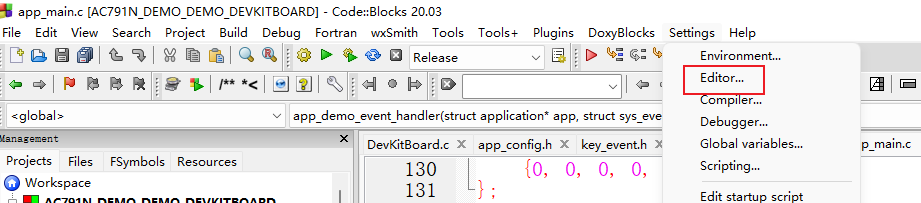</p><p data-lake-id="u497cfac6" id="u497cfac6"><span data-lake-id="uc58ce001" id="uc58ce001">​</span><br/></p><p data-lake-id="u04891100" id="u04891100"><span data-lake-id="uabf9d220" id="uabf9d220">找到C/C++ Editor settings，将方框中标红的√去掉</span></p><p data-lake-id="u78353eec" id="u78353eec">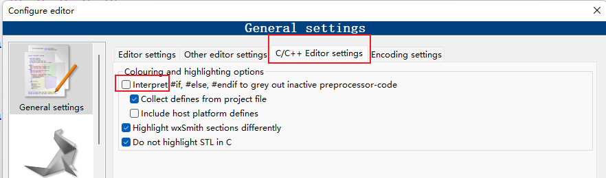</p><h2 data-lake-id="FWeix" data-lake-index-type="2" id="FWeix"><span data-lake-id="u729943b6" id="u729943b6">添加头文件扫描路径</span></h2><p data-lake-id="u2ba6fd3b" id="u2ba6fd3b"><span data-lake-id="u544824d0" id="u544824d0">工程右键，点</span><code data-lake-id="uef79351f" id="uef79351f"><span data-lake-id="u9fdc56c1" id="u9fdc56c1">Build options...</span></code></p><p data-lake-id="u9d7035ca" id="u9d7035ca">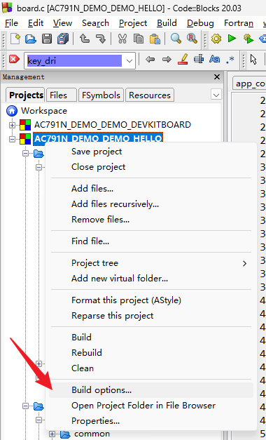</p><p data-lake-id="u659fee22" id="u659fee22"><span data-lake-id="u3f406dcd" id="u3f406dcd">进入</span><code data-lake-id="ue41fec92" id="ue41fec92"><span data-lake-id="u5455703b" id="u5455703b">Search directories</span></code><span data-lake-id="u142b5a4c" id="u142b5a4c">，在</span><code data-lake-id="ufa5fd0bf" id="ufa5fd0bf"><span data-lake-id="uc3c0e334" id="uc3c0e334">Compiler</span></code><span data-lake-id="u932e223d" id="u932e223d">里添加需要扫描的路径</span></p><p data-lake-id="u90445782" id="u90445782">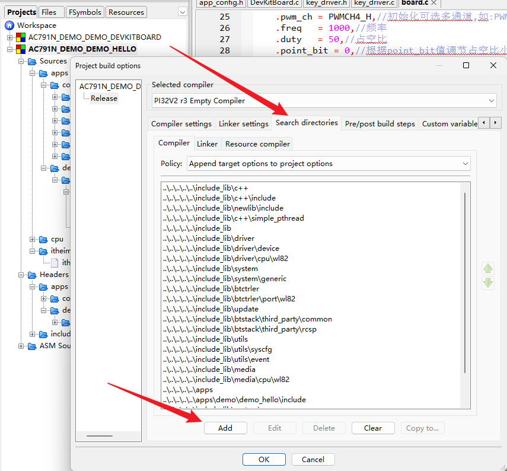</p><p data-lake-id="u52be03b7" id="u52be03b7"><br/></p><h2 data-lake-id="vcfVk" data-lake-index-type="2" id="vcfVk"><span data-lake-id="u3d0fd21e" id="u3d0fd21e">让Tab更清晰</span></h2><p data-lake-id="u23c49577" id="u23c49577"><span data-lake-id="ucc556a37" id="ucc556a37">原本的Tab标签颜色相同，不容易分辨哪个文件是当前文件，通过修改配置使之更清晰，效果如下：</span></p><p data-lake-id="u06f390d6" id="u06f390d6"></p><p data-lake-id="ue948302a" id="ue948302a"><span data-lake-id="u1e32f5fd" id="u1e32f5fd">打开</span><code data-lake-id="uf6315348" id="uf6315348"><span data-lake-id="ufa4543ea" id="ufa4543ea">Settings</span></code><span data-lake-id="u4f88c642" id="u4f88c642"> - </span><code data-lake-id="u889d2582" id="u889d2582"><span data-lake-id="u112c5f8f" id="u112c5f8f">Environment...</span></code></p><p data-lake-id="u1b9cb575" id="u1b9cb575"></p><p data-lake-id="ucad734d0" id="ucad734d0"><span data-lake-id="ue3d9b68d" id="ue3d9b68d">打开</span><code data-lake-id="u90cb3982" id="u90cb3982"><span data-lake-id="u40630160" id="u40630160">Notebooks appearance</span></code></p><p data-lake-id="u5e580c39" id="u5e580c39"></p><h2 data-lake-id="f8TLz" data-lake-index-type="2" id="f8TLz"><span data-lake-id="uc922e164" id="uc922e164" style="color: rgb(255,0,0)">编译的时候提示Security Warning</span></h2><p data-lake-id="u97d620d6" id="u97d620d6" style="text-align: justify"><span class="lake-fontsize-12" data-lake-id="ua75c9bea" id="ua75c9bea">由于</span><span class="lake-fontsize-12" data-lake-id="u7485a961" id="u7485a961">Windows下命令行参数长度有限，当链接较多文件后，可能会超过长度限制导致链接失败。为了支持链接更多的文件，需要把一部分命令行参数写入到临时的文件（目前是工程目录下的</span><span class="lake-fontsize-12" data-lake-id="ua4234270" id="ua4234270">目标文件名</span><span class="lake-fontsize-12" data-lake-id="u10826818" id="u10826818">+</span><span class="lake-fontsize-12" data-lake-id="u87889da5" id="u87889da5">objs.txt文件</span><span class="lake-fontsize-12" data-lake-id="u58fb4826" id="u58fb4826">，如</span><span class="lake-fontsize-12" data-lake-id="u70a14274" id="u70a14274">sdk.elf.objs.txt</span><span class="lake-fontsize-12" data-lake-id="uf0582042" id="uf0582042">）中，然后再链接。创建文件的操作会触发警告。</span></p><p data-lake-id="u05a923f6" id="u05a923f6" style="text-align: justify"><span class="lake-fontsize-12" data-lake-id="uab512204" id="uab512204">从编译器</span><span class="lake-fontsize-12" data-lake-id="uf535a0ff" id="uf535a0ff">2.4.1版本开始，codeblocks在编译的时候，可能会提示类似如下的内容：</span></p><p data-lake-id="u56b12002" id="u56b12002" style="text-align: justify"><span class="lake-fontsize-12" data-lake-id="u4f2a846e" id="u4f2a846e">​</span><br/></p><p data-lake-id="u1c9d7deb" id="u1c9d7deb" style="text-align: justify"><span class="lake-fontsize-12" data-lake-id="u90dc9e98" id="u90dc9e98">请选择图中的【</span><span class="lake-fontsize-12" data-lake-id="u47ddf3cc" id="u47ddf3cc">ALLOW execution of this command for all scripts from now on】并点击【OK】。</span></p><p data-lake-id="u7fb139bb" id="u7fb139bb" style="text-align: justify">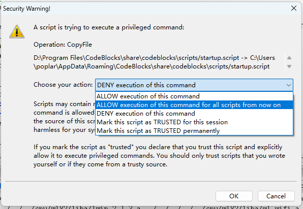</p><p data-lake-id="u41c77046" id="u41c77046" style="text-align: justify"><span data-lake-id="u69982ddd" id="u69982ddd">如果没有来得及点击，可以从这里从新打开此窗口：</span></p><p data-lake-id="u48ac17aa" id="u48ac17aa" style="text-align: justify"><code data-lake-id="u12dcfef0" id="u12dcfef0"><span data-lake-id="uc6653098" id="uc6653098">Settings</span></code><span data-lake-id="ub489b69b" id="ub489b69b"> -&gt; </span><code data-lake-id="uf330a322" id="uf330a322"><span data-lake-id="u7075b8c0" id="u7075b8c0">Edit startup script</span></code></p><p data-lake-id="ue980a9c0" id="ue980a9c0" style="text-align: justify">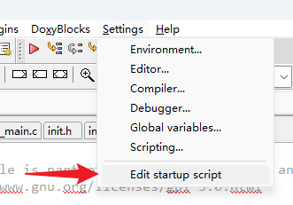</p><p data-lake-id="u6b36e2f8" id="u6b36e2f8" style="text-align: justify"><span data-lake-id="uabeb70e3" id="uabeb70e3">然后重启CodeBlocks</span></p><p data-lake-id="u8ce06950" id="u8ce06950" style="text-align: justify"><span class="lake-fontsize-12" data-lake-id="ua84e7ff3" id="ua84e7ff3">​</span><br/></p><p data-lake-id="u0f7eadf0" id="u0f7eadf0" style="text-align: justify"><span class="lake-fontsize-12" data-lake-id="u92bc9ff8" id="u92bc9ff8">更多文档，请参考以下链接：</span></p><p data-lake-id="u4ce5189e" id="u4ce5189e" style="text-align: justify"><span class="lake-fontsize-12" data-lake-id="uae74c928" id="uae74c928">​</span><br/></p><p data-lake-id="ua233cbcc" id="ua233cbcc" style="text-align: justify"><span class="lake-fontsize-12" data-lake-id="u54ea85d0" id="u54ea85d0">https://doc.zh-jieli.com/Tools/zh-cn/index.html</span></p><p data-lake-id="u81071cda" id="u81071cda" style="text-align: justify"><span class="lake-fontsize-12" data-lake-id="ub2fd8eab" id="ub2fd8eab">​</span><br/></p><h2 data-lake-id="CeoH1" data-lake-index-type="2" id="CeoH1"><span data-lake-id="u60259823" id="u60259823">界面汉化</span></h2><p data-lake-id="u874cbe13" id="u874cbe13"><a class="yuque-card-link" href="../../_assets/65998149c40b4567515fac67.zip">CodeBlocks汉化包.zip</a></p><p data-lake-id="u60302add" id="u60302add"><br/></p><p data-lake-id="u7de1756e" id="u7de1756e"><span data-lake-id="uc2f447a1" id="uc2f447a1">解压之后有三个文件夹</span></p><p data-lake-id="1ec09d34a2411ce527db4d5405e31422" id="1ec09d34a2411ce527db4d5405e31422">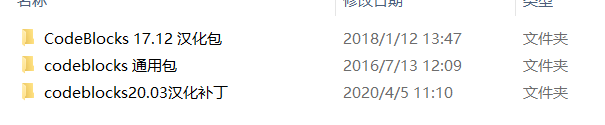</p><p data-lake-id="4f0394b8edf24bc4b9d5e4e6fdd5bdf9" id="4f0394b8edf24bc4b9d5e4e6fdd5bdf9"><span data-lake-id="u18c919c4" id="u18c919c4">因为我们下载的是20.03版本的，所以打开"codeblocks 20.03汉化补丁"文件夹</span></p><p data-lake-id="fd89a961d9de9cd94ff11066b334aefa" id="fd89a961d9de9cd94ff11066b334aefa"><span data-lake-id="uaab574bb" id="uaab574bb">找到里面的</span><code data-lake-id="ufd5fdda0" id="ufd5fdda0"><span data-lake-id="u3ca45604" id="u3ca45604">locale</span></code><span data-lake-id="u38dc90fd" id="u38dc90fd">文件夹，并且复制它</span></p><p data-lake-id="c2e4ab4a3f14d1e49b2ff74f82008d83" id="c2e4ab4a3f14d1e49b2ff74f82008d83">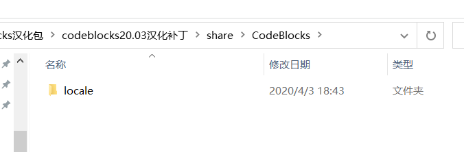</p><p data-lake-id="d37d14b36cc1d2696ce8ee3cdbed4fd8" id="d37d14b36cc1d2696ce8ee3cdbed4fd8"><span data-lake-id="u13e8dc77" id="u13e8dc77">找到软件的安装目录，并且将刚才复制的locale文件夹粘贴到软件的安装目录下</span></p><blockquote data-lake-id="u65fec147" id="u65fec147"><p data-lake-id="4c6df7a9c761f40d1fb754d4927db12c" id="4c6df7a9c761f40d1fb754d4927db12c"><span data-lake-id="u8dd5b7dd" id="u8dd5b7dd">我的安装目录在：D:\Program Files\CodeBlocks\share\CodeBlocks</span></p></blockquote><p data-lake-id="e29776a0420cef9deaa063a28abcf974" id="e29776a0420cef9deaa063a28abcf974">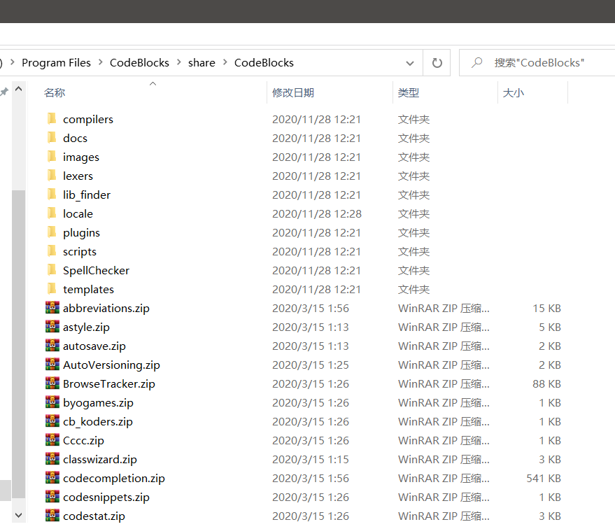</p><p data-lake-id="b459a93ffd535e167b5f351324c2c82e" id="b459a93ffd535e167b5f351324c2c82e"><span data-lake-id="u5e06dca0" id="u5e06dca0">粘贴好文件夹后，打开软件，点击</span><span class="yuque-card-unsupported">[label]</span><span data-lake-id="u2fc8c9a0" id="u2fc8c9a0"> -&gt; </span><span class="yuque-card-unsupported">[label]</span></p><p data-lake-id="a47ab08a76d55b26f14cc221eaf5fc8d" id="a47ab08a76d55b26f14cc221eaf5fc8d">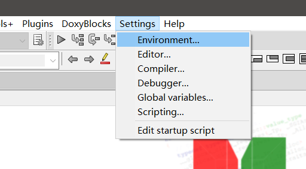</p><p data-lake-id="c723aae95b2e40b43bfb2faa05fe6422" id="c723aae95b2e40b43bfb2faa05fe6422"><span data-lake-id="u731ec0b3" id="u731ec0b3">在View视图中，将</span><span class="yuque-card-unsupported">[label]</span><span data-lake-id="u9fa76ee2" id="u9fa76ee2">勾选上，并且选择</span><span class="yuque-card-unsupported">[label]</span><span data-lake-id="u726e7006" id="u726e7006">,再点击OK保存设置</span></p><p data-lake-id="47fea52c774f181c1e78f4835529ab00" id="47fea52c774f181c1e78f4835529ab00">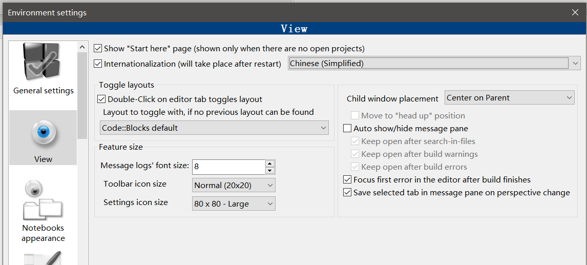</p><p data-lake-id="01e4e214a98438a4726fe46130ec713c" id="01e4e214a98438a4726fe46130ec713c"><span data-lake-id="ufb13aa56" id="ufb13aa56">关闭软件，再重新打开，汉化完成</span></p><p data-lake-id="u20ac52d5" id="u20ac52d5">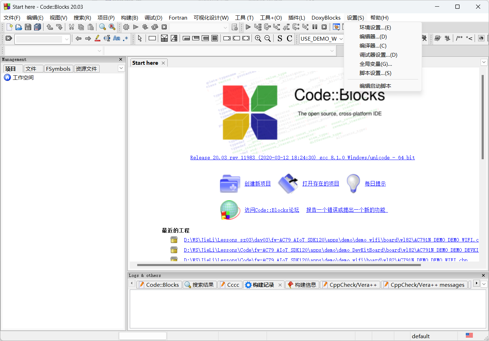</p><p data-lake-id="dcc914187318ad4734ddf11aa9891f38" id="dcc914187318ad4734ddf11aa9891f38"><br/></p><p data-lake-id="ue22fd9ab" id="ue22fd9ab"><br/></p>